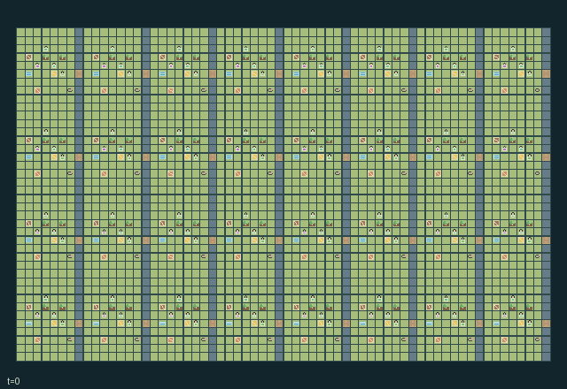

GI243 · Mountain Orchard Neighbours

Deliver 64 orchard fruit cargos while maintaining cross-household pollination, water, shared hives and footbridges before H=896.
Identity and original contract
128 independently actionable roles; 23 discrete commands per role; 858 native observation columns per role; original horizon 896 steps. Declared per-step reward range: -8.0 to 8.0. Observation regime: partially_observable.
Source SHA-256: 3766628b843e2db382cb1f6066699330f3f2abe742ac8e583054e42f0899523d
The objective, rewards, population, map and horizon remain original. A preview is not a success claim.
Objective and gameplay
Deliver 64 orchard fruit cargos while maintaining cross-household pollination, water, shared hives and footbridges before H=896.
Compatible nearby trees exchange pollen through a two-step wind queue only with live nearby pollinators. Spray protects local fruit growth but suppresses neighboring pollen and hive health. Hive care and bridge repair require complementary actors. Water, compost, hives and tools can be physically moved between households.
- Thirty-two households each provide four independently controllable people. Bees and herds are environmental entities.
- Flowering compatible trees send wind pollen through a two-step queue. A healthy local hive and nearby visible bee are required.
- Spray removes local pests but poisons neighboring trees and hurts nearby hives. Compost and carried water support delayed growth.
- Hive care needs a beekeeper plus a partner shading the same hive. A beekeeper can carry a hive as a backpack to another terrace.
- Bridge repair needs a mason with material and a nearby bracing partner. Erosion closes neglected crossings.
- Harvest fruit and deliver it to village stores; quality travels with the carried cargo. Native human interaction remains unverified.
Ending: Natural completion at 64 delivered fruit cargos; otherwise horizon truncation at 896.
What this game explores
Resource commons & externalities: An action changes a persistent resource or burden that another role also encounters. Compare extraction with maintenance and record the downstream resource trajectory.
Complementary production & service: A useful outcome requires ordered stages, scarce equipment or another role's capability. Measure real completed products and resource circulation rather than counting intermediate actions as success.
Joint transport & shared access: Positions, load geometry, occupancy and persistent access constrain whose action can succeed next. Distinguish physical handoff, shared controls and simultaneous force from a cosmetic cooperation label.
These are questions supported by rule structure, not observed learning effects.
Play it: operating walkthrough
crucibles play --game gi243Keep Python running and open its printed address. Select this game, set a seed and press Create session. The game itself is always English.
Assign a role range to Host with Assign / take over, or Assign all roles. Invite a second participant with Create player invitation, then assign a disjoint subset. Every original role is available.
For every owned role choose a legal command and press Queue. Arrow keys / WASD queue a declared directional action for the current role camera when available. Space or Advance one joint step advances everyone together. Non-directional games use the selectors.
Unqueued roles use the labelled untrained uniform-legal policy. Take over or release roles before the next step without resetting. Full-state debug is privileged and permanently logged; role cameras preserve permissions. Close the session to retain logs. Server restart does not restore sessions.
Complete command reference
IDs and English labels exactly match the manifest. Availability depends on role, resources, location and phase. An available action can still have no productive effect.
0·Rest
1·East
2·West
3·South
4·North
5·Collect compost or mason kit
6·Prune flowering tree
7·Spray pests
8·Water tree with carried flask
9·Add carried compost
10·Harvest fruit
11·Care for hive
12·Shade hive during partner care
13·Repair bridge with mason kit
14·Brace bridge for mason
15·Lift hive backpack
16·Set down hive backpack
17·Fill water flask
18·Guide nearby herd
19·Deliver fruit to village store
20·Exchange tools
21·Handoff cargo and fruit quality
22·Plant sapling with compost
Roles and capability identifiers
These original role names describe capabilities, not interchangeable skins. Check each owned role's legal selector before planning handoffs.
agent_0·orchard keeper of household 0
agent_1·beekeeper of household 0
agent_2·water and herd steward of household 0
agent_3·bridge mason of household 0
agent_4·orchard keeper of household 1
agent_5·beekeeper of household 1
agent_6·water and herd steward of household 1
agent_7·bridge mason of household 1
agent_8·orchard keeper of household 2
agent_9·beekeeper of household 2
agent_10·water and herd steward of household 2
agent_11·bridge mason of household 2
agent_12·orchard keeper of household 3
agent_13·beekeeper of household 3
agent_14·water and herd steward of household 3
agent_15·bridge mason of household 3
agent_16·orchard keeper of household 4
agent_17·beekeeper of household 4
agent_18·water and herd steward of household 4
agent_19·bridge mason of household 4
agent_20·orchard keeper of household 5
agent_21·beekeeper of household 5
agent_22·water and herd steward of household 5
agent_23·bridge mason of household 5
agent_24·orchard keeper of household 6
agent_25·beekeeper of household 6
agent_26·water and herd steward of household 6
agent_27·bridge mason of household 6
agent_28·orchard keeper of household 7
agent_29·beekeeper of household 7
agent_30·water and herd steward of household 7
agent_31·bridge mason of household 7
agent_32·orchard keeper of household 8
agent_33·beekeeper of household 8
agent_34·water and herd steward of household 8
agent_35·bridge mason of household 8
agent_36·orchard keeper of household 9
agent_37·beekeeper of household 9
agent_38·water and herd steward of household 9
agent_39·bridge mason of household 9
agent_40·orchard keeper of household 10
agent_41·beekeeper of household 10
agent_42·water and herd steward of household 10
agent_43·bridge mason of household 10
agent_44·orchard keeper of household 11
agent_45·beekeeper of household 11
agent_46·water and herd steward of household 11
agent_47·bridge mason of household 11
agent_48·orchard keeper of household 12
agent_49·beekeeper of household 12
agent_50·water and herd steward of household 12
agent_51·bridge mason of household 12
agent_52·orchard keeper of household 13
agent_53·beekeeper of household 13
agent_54·water and herd steward of household 13
agent_55·bridge mason of household 13
agent_56·orchard keeper of household 14
agent_57·beekeeper of household 14
agent_58·water and herd steward of household 14
agent_59·bridge mason of household 14
agent_60·orchard keeper of household 15
agent_61·beekeeper of household 15
agent_62·water and herd steward of household 15
agent_63·bridge mason of household 15
agent_64·orchard keeper of household 16
agent_65·beekeeper of household 16
agent_66·water and herd steward of household 16
agent_67·bridge mason of household 16
agent_68·orchard keeper of household 17
agent_69·beekeeper of household 17
agent_70·water and herd steward of household 17
agent_71·bridge mason of household 17
agent_72·orchard keeper of household 18
agent_73·beekeeper of household 18
agent_74·water and herd steward of household 18
agent_75·bridge mason of household 18
agent_76·orchard keeper of household 19
agent_77·beekeeper of household 19
agent_78·water and herd steward of household 19
agent_79·bridge mason of household 19
agent_80·orchard keeper of household 20
agent_81·beekeeper of household 20
agent_82·water and herd steward of household 20
agent_83·bridge mason of household 20
agent_84·orchard keeper of household 21
agent_85·beekeeper of household 21
agent_86·water and herd steward of household 21
agent_87·bridge mason of household 21
agent_88·orchard keeper of household 22
agent_89·beekeeper of household 22
agent_90·water and herd steward of household 22
agent_91·bridge mason of household 22
agent_92·orchard keeper of household 23
agent_93·beekeeper of household 23
agent_94·water and herd steward of household 23
agent_95·bridge mason of household 23
agent_96·orchard keeper of household 24
agent_97·beekeeper of household 24
agent_98·water and herd steward of household 24
agent_99·bridge mason of household 24
agent_100·orchard keeper of household 25
agent_101·beekeeper of household 25
agent_102·water and herd steward of household 25
agent_103·bridge mason of household 25
agent_104·orchard keeper of household 26
agent_105·beekeeper of household 26
agent_106·water and herd steward of household 26
agent_107·bridge mason of household 26
agent_108·orchard keeper of household 27
agent_109·beekeeper of household 27
agent_110·water and herd steward of household 27
agent_111·bridge mason of household 27
agent_112·orchard keeper of household 28
agent_113·beekeeper of household 28
agent_114·water and herd steward of household 28
agent_115·bridge mason of household 28
agent_116·orchard keeper of household 29
agent_117·beekeeper of household 29
agent_118·water and herd steward of household 29
agent_119·bridge mason of household 29
agent_120·orchard keeper of household 30
agent_121·beekeeper of household 30
agent_122·water and herd steward of household 30
agent_123·bridge mason of household 30
agent_124·orchard keeper of household 31
agent_125·beekeeper of household 31
agent_126·water and herd steward of household 31
agent_127·bridge mason of household 31
Information and observation permissions
Only own prefix and radius-two Chebyshev 5x5 patch with exact listed channels enter the policy. Visible actor identity, role, crew, tools, cargo, stamina and message are in the patch. Each object attribute is in its group channels. Hidden cells and entities remain hidden; global debugger must be labeled. Clock alone is public.
The GIF is full-state debug and may reveal hidden entities or private state. Train on obs[agent], not the picture, state tree or another role's private row. Field slices and visibility are in the original manifest.
Reinforcement-learning integration
import jax
from crucibles_jaxmarl import make
env = make("gi243")
key = jax.random.PRNGKey(0)
key, rk, ak, sk = jax.random.split(key, 4)
obs, state = jax.jit(env.reset)(rk)
actions = env.sample_actions(ak, state)
obs, state, rewards, dones, info = jax.jit(env.step_env)(sk, state, actions)
done = dones["__all__"]Observations are float32 vectors of width 858; actions are scalar int32; masks have 23 entries. Supply all 128 roles each transition. Masked sampling is an engineering reference, not a trained learner.
step_env retains terminal data without reset. step performs outer autoreset and keeps terminal data in info["raw_state"] and info["raw_observation"]. Use dones["__all__"] for episode boundaries; separate completion, failure and time limit in analysis.
JIT or vmap equal identities and shapes. Split independent reset, policy and transition keys. Group different shapes explicitly; do not shrink the population or horizon. Host rendering stays outside training.
Training questions and fair evaluation
Define valid completion from the objective before fitting. Preserve original rewards and also report real deliveries/services, losses, resource state, unresolved episodes and per-role returns. Animation is not a reward signal.
An action changes a persistent resource or burden that another role also encounters. Compare extraction with maintenance and record the downstream resource trajectory.
A useful outcome requires ordered stages, scarce equipment or another role's capability. Measure real completed products and resource circulation rather than counting intermediate actions as success.
Positions, load geometry, occupancy and persistent access constrain whose action can succeed next. Distinguish physical handoff, shared controls and simultaneous force from a cosmetic cooperation label.
Compare memory, communication or centralized critics under matched actor information. Declare critic access; keep actor inputs role-filtered. Match partner/opponent distributions, masks, compute and checkpoint selection. Final tests never enter fitting or selection.
Independent training runs or source-pairing blocks are inferential units; episodes from one policy are not independent training replications. Save hashes, keys, versions, device, time and cost. Negative, zero, failed and indeterminate outcomes are valid. No trained checkpoint or target score is supplied.
Classification and evidence
Overlapping editorial labels are reading aids, not proof of novelty, difficulty, strategic equivalence or learning effects.
- Resource commons & externalities
- Evidence
manifest.task.objective: Deliver 64 orchard fruit cargos while maintaining cross-household pollination, water, shared hives and footbridges before H=896.
- Evidence
manifest.task.interaction: Compatible nearby trees exchange pollen through a two-step wind queue only with live nearby pollinators. Spray protects local fruit growth but suppresses neighboring pollen and hive health. Hive care and bridge repair require complementary actors. Water, compost, hives and tools can be physically moved between households.
- Evidence
manifest.actions.5: Collect compost or mason kit
- Complementary production & service
- Evidence
manifest.task.interaction: Compatible nearby trees exchange pollen through a two-step wind queue only with live nearby pollinators. Spray protects local fruit growth but suppresses neighboring pollen and hive health. Hive care and bridge repair require complementary actors. Water, compost, hives and tools can be physically moved between households.
- Evidence
manifest.actions.13: Repair bridge with mason kit
- Evidence
scene.rules.4: Bridge repair needs a mason with material and a nearby bracing partner. Erosion closes neglected crossings.
- Joint transport & shared access
- Evidence
manifest.task.objective: Deliver 64 orchard fruit cargos while maintaining cross-household pollination, water, shared hives and footbridges before H=896.
- Evidence
manifest.task.interaction: Compatible nearby trees exchange pollen through a two-step wind queue only with live nearby pollinators. Spray protects local fruit growth but suppresses neighboring pollen and hive health. Hive care and bridge repair require complementary actors. Water, compost, hives and tools can be physically moved between households.
- Evidence
manifest.task.observation_access: Only own prefix and radius-two Chebyshev 5x5 patch with exact listed channels enter the policy. Visible actor identity, role, crew, tools, cargo, stamina and message are in the patch. Each object attribute is in its group channels. Hidden cells and entities remain hidden; global debugger must be labeled. Clock alone is public.
Source, receipts and preview limits
The additional generated state GIF replays saved untrained legal actions through the original kernel. At most 25 actual endpoints include initial and terminal state; no invented interpolation. It is full-state debug, not the role observation. Where an original scene preview exists, it is displayed first with its own recorded information scope. The two recordings may use different trajectories and views.
Original source, observation slices, manifest and mechanism
Native receipt · Presentation receipt
Engineering passes do not establish learning. Nonzero floating differences remain recorded and undetermined; no new tolerance was introduced. Human scores remain unverified.